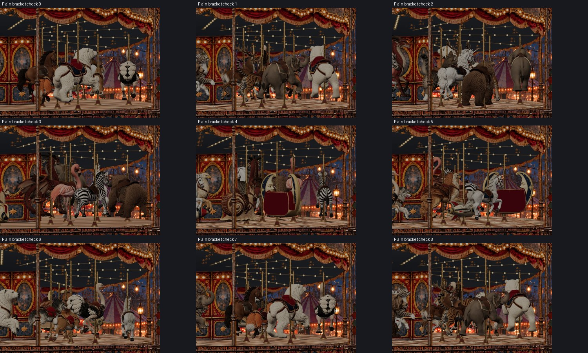
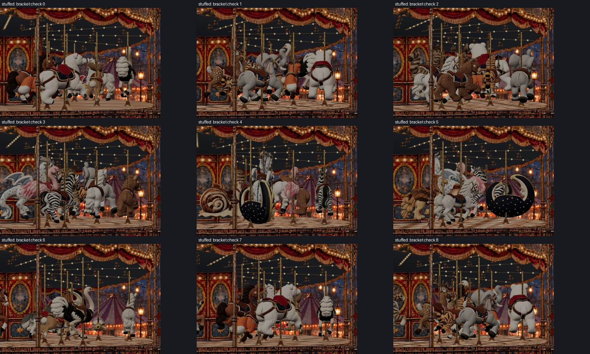
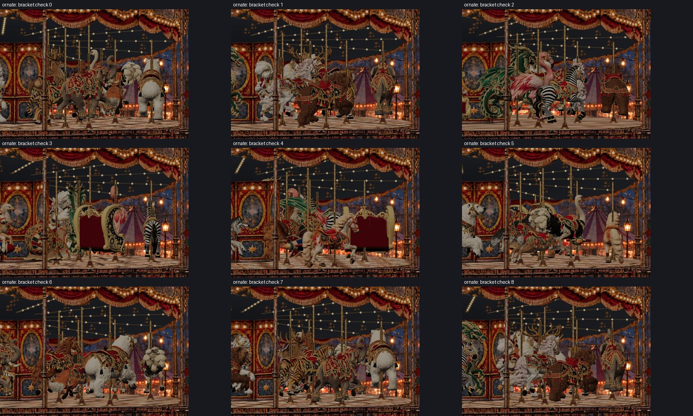

The depth-tested guide is limited once to the bracket shaft endpoint (slot y=-4) at the lowest possible bob position. The fixed lower bound accounts for camera tilt and cylinder radius. Upper depth coverage, pole axis, radius and spiral pitch are unchanged. No GLBs, mount transforms, crops, loading logic or Carousel ordering were modified.
A per-frame prototype was rejected because update ordering caused lag. The final fixed worst-case bound avoids that failure and adds no per-frame work.
All 60 mount/style combinations completed over a full revolution with zero bracket overruns, registration drift, hidden mounts or page errors. The geometric test also checks 225 bob positions per pole configuration, including the exact lowest endpoint. Nine scene samples per style were visually reviewed; screenshots are sampled evidence, not continuous visual inspection.
264 samples; 7.544 radians; no errors.

275 samples; 7.614 radians; no errors.

229 samples; 7.579 radians; no errors.

Run verify-brackets.mjs and bracket-revolution.cjs in this directory; run the existing verify-variants.mjs, verify-promoted-loading.cjs and verify-loading-switch.cjs from the parent verification directory. Serve the built app on port 4204 for browser checks.